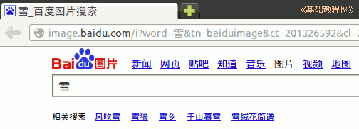

2011-2012 第一学期七年级电脑操作教学设计
作者：TeliuTe 来源：基础教程网
二十四、学会使用搜索 返回目录 下一课
（一）教学设计
1、学习目标：学会使用搜索
2、注意事项：一个是点链接另存为，一个是图片另存为
3、教学过程：
1）教师准备学案和板书；
2）学生整队进入，开机抄黑板上笔记；
3）教师讲解板书演示操作；
4）学生打指法、日志、完成操作；
5）教师打勾记录学生指法成绩，检查日志和操作；
注：学生抄完笔记就开始打指法、日志，老师讲完后再继续完成；
（二）板书设计(学生笔记)
第24课 学会使用搜索
1、常用搜索有百度和谷歌。
2、百度侧重生活，谷歌侧重科研。
3、找到搜索框，输入关键字。
4、搜索“冬季预防感冒”保存网页。
5、搜索“雪”图片，保存图片。
操作图示：

（三）课后记 2012-11-30 13:21
--
早上想着会不会又占课，结果没事看下午怎么样
昨天八年级的2、3占了，没有信技课还不会唱歌了吗
--
课间的灰尘挺大的，鞋子上泥多冬天
通风吹一会，记得每次下课了以后，按时把学生清走
--
看了下去年的课程，这时候基本都学完了
自己再挑些综合性的内容强化巩固一下
--
去年大概学了28课，今年看看能学多少，需要选择适当的时间和范例
后面的内容还得自己再找找看，胸有成竹不必担心，如果你会的真是多的话
--
上一节的连网有些没做，这节课的内容上要用到网络
这样检查设置以费了许多口舌和时间
--
保存文件的时候要把名字改了，点后面的不能动
扩展名的知识讲了没有都忘记了，好的查询方式
--
2012-12-4 第二四课 学会上网方式
1、ADSL 宽带连接，电话---猫---电脑
2、小区宽带，电缆转发器
3、局球网上网，路由器---交换机
4、搜索“冬季预防感冒”保存网页
5、搜索“雪，图片”保存图片
6、右键---新标签
--
下午要纪念一二·九，上午的班把上节的操作再做一下
知识点找个无关紧要的，把上网方式学习一下
--
先把上网的代理讲一下，学生自己把设置改好
然后进去以后，写日志打指法
--
下午的两个班不得再演示一下，先把网络设置讲完
八年级的也已经过了，七年级的别忘记了
--
下午把那些照片处理好，感觉不太多，一个班两张
上次课本剧的多一些
返回目录 下一课
本教程由86团学校TeliuTe制作|著作权所有
基础教程网：http://teliute.org/
美丽的校园……
转载和引用本站内容，请保留作者和本站链接。